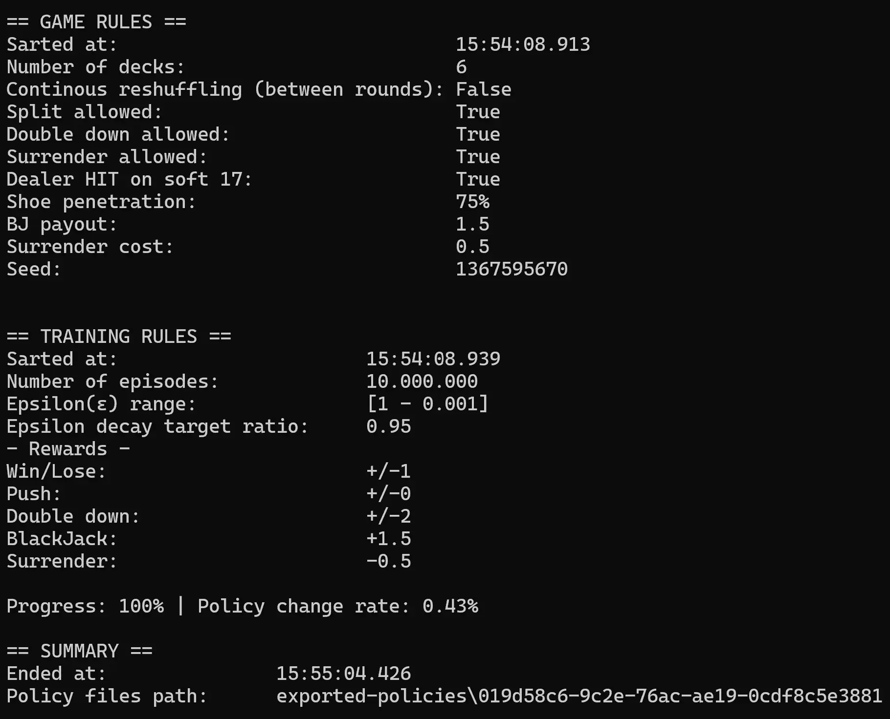
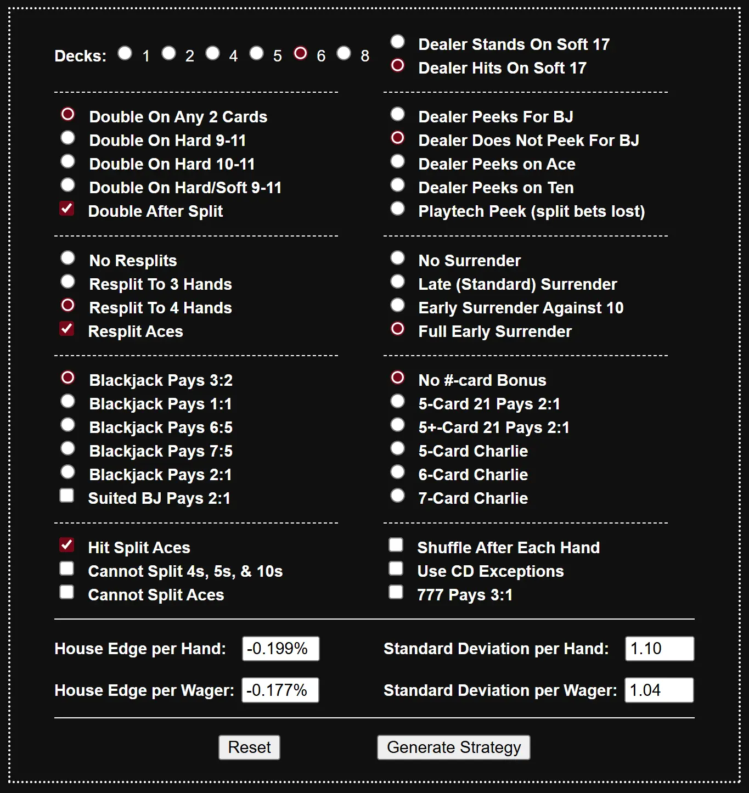

BlackJack AI - Part 2
Finally my BlackJack Agent can sit at the table and play in my place (almost)
So, as I mentioned in my previous article, I started programming a Q-Learning agent for my BlackJack AI, but I ended up noticing the result wasn't good enough.
I started questioning my approach and, looking for answers, I encountered the Monte Carlo simulation approach.
Monte Carlo (MC) - first visit, on-policy
The Monte Carlo approach is a type of reinforcement learning that uses random sampling to estimate the value of an action.
In other words, it uses:
- averages to approximate expected values
- GPI (Generalized Policy Iteration) to obtain an approximation of the optimal policy
MC is a model-free method: it doesn't plan actions in advance; it just learns action-return (A, S) -> R associations.
The basic idea is to simulate millions of games and use the average return to estimate the value of an action (e.g. whether it pays to HIT a 16 against a dealer 10).
Monte Carlo (unlike Q-Learning) felt simpler to implement and to understand conceptually: after each hand is played randomly (not really random; let's say following the current policy), the return is computed and used to update the value of the action. That fits blackjack well: the player finishes their hand, then the dealer plays, and only then is the win/lose/push outcome known.
Some notation
Sis the state of the player and the dealerAis the action to takeGis the cumulative reward (not step-by-step as in Q-Learning)α(alpha) is the learning rateε(epsilon) is the exploration rateπ(S)is the soft policy: the action to take in a given stateSQ(S, A)is the action-value function-what we want to maximize with the MC algorithm
The flow (chart)
On each episode, the cards are dealt to the player and the dealer (one face-up card for the dealer). At that point the training loop starts:
- the player (agent) evaluates its current state:
(player_sum, has_soft_ace, dealer_face_up_card, can_be_splitted) - the player chooses an action (see exploration/exploitation strategy below)
- if the hand busts or the player stands, the loop ends
- otherwise the loop continues with the next card or split…
Once the loop ends, the dealer plays out their hand (following the game rules) and the game result is computed.
For simplicity, imagine a trajectory of these events that ends in a win for the player:
Q(12, HIT)Q(15, HIT)Q(20, STAY)
Assigning the rewards (+1 for a win in this case) in MC rests on the idea that each decision in this sequence contributed to that outcome.
The learning rate α
To do that, the algorithm assigns the reward G = 1 to each state-action pair along the trajectory, weighted by a factor alpha. α = 1 / N(S, A), where N(S, A) is how often that pair has been visited. Early visits get more weight; later visits are updated more gently.
Conceptually: learn fast at first, then refine more cautiously over time, so that after many visits a rare black swan cannot yank the estimate around.
public void LearnFromEpisode(List<(AgentState state, PlayerAction action, int handIndex)> trajectory, GameState gameState)
{
double cumulativeGforSplits = 0.0;
int currentHandIndex = -1;
int numOfVisits;
double alpha;
double[] handsReward = GetHandsReward(trajectory, gameState);
for (int i = trajectory.Count - 1; i >= 0; i--) { // from last to start: compute cumulative G for splits
var (state, action, handIndex) = trajectory[i];
if (action == PlayerAction.SPLIT) {
numOfVisits = _monteCarloData.RegisterAgentStateActionVisit(state, action);
alpha = 1.0 / numOfVisits;
_monteCarloData.UpdateQTableAgentStateAction(state, action, cumulativeGforSplits, alpha);
continue;
}
if (handIndex != currentHandIndex) // new hand: use the correct final reward (e.g. Hand 0: H->H->H, reward = 1.0 not 3.0)
{
currentHandIndex = handIndex;
cumulativeGforSplits += handsReward[handIndex];
}
numOfVisits = _monteCarloData.RegisterAgentStateActionVisit(state, action);
alpha = 1.0 / numOfVisits; // 1/N(S,A)
_monteCarloData.UpdateQTableAgentStateAction(state, action, handsReward[handIndex], alpha);
}
}Note: the code is a little more complex than what we discussed before because it handles splits and cumulative reward per hand.
The ε-greedy strategy
During training the agent picks actions with an ε-greedy rule. The greedy move is always taking the action with the highest current Q-value. The ε term injects random exploration so the agent sometimes tries other actions; without that, only the current best move would keep getting reinforced and some state-action pairs might never get a fair look.
With probability ε the agent chooses a random legal action instead of the greedy one.
public PlayerAction ChooseAction(IReadOnlySet<PlayerAction> availableActions, double epsilon, AgentState currAgentState)
{
_monteCarloData.RegisterAgentStateAvailableActions(currAgentState, availableActions); // QTable, NTable = default update
if (_random.NextDouble() < epsilon) { // explore
return availableActions.ElementAt(_random.Next(availableActions.Count));
}
// else be greedy
PlayerAction bestAction = availableActions.ElementAt(_random.Next(availableActions.Count)); // random tie-break when Q is empty
double bestActionValue = _monteCarloData.GetQTableValue(currAgentState, bestAction);
foreach (PlayerAction otherAction in availableActions) {
if (otherAction == bestAction) continue;
double otherActionValue = _monteCarloData.GetQTableValue(currAgentState, otherAction);
if (otherActionValue <= bestActionValue) continue;
bestAction = otherAction;
bestActionValue = otherActionValue;
}
return bestAction;
}Note: for better performance I decayed ε over time: a common practice so the agent explores heavily early and shifts toward exploitation as the policy stabilizes.
Switch to MC training (BlackJack.AI.TrainingField)
With these pieces in place I implemented MC training in the BlackJack.AI.TrainingField project: a new TrainingPlayer (Monte Carlo) class joined the solution.
For this demo I used the following training configuration:
{
"GameConfig": {
"NumOfDecks": 6,
"ContinousReShufflingBetweenRounds": false,
"AllowSplit": true,
"AllowDoubleDown": true,
"AllowSurrender": true,
"DealerHitsSoft17": true,
"BlackJackPayout": 1.5,
"SurrenderCost": 0.5,
"ShoePenetration": 75
},
"NumOfEpisodes": 10000000,
"EpsilonStart": 1.00,
"EpsilonEnd": 0.001,
"EpsilonDecayTargetRatio": 0.95,
"Seed": null
}Part 2.1 - graphic visualization (BlackJack.AI.Graphic)
Remembering that the original goal was to obtain an agent that plays a solid basic strategy, I added a visual renderer for the Q-policy produced by MC training. It helped me see how the agent behaved, catch bugs, and compare my policies to published basic-strategy charts. An example appears in the benchmark section below.
The benchmark (MC agent vs H17 basic strategy vs S17 basic strategy)
To evaluate how the agent performs, I compared it to standard basic-strategy tables. I loaded charts from BLACKJACK APPERTICESHIP into two reference agents (H17 and S17).
I then trained my agent toward a strong policy under these rules:

After that I ran 10,000,000 games per agent and collected win rates (house edge) against the same seed (816878096):
S17 basic strategy
H17 basic strategy
MC agent
Finally we can discuss the performances of the best MC agent that I have been able to train.Considerations
During the implementation, and to know what results I should expect, I used this website: BLACKJACK HOUSE EDGE CALCULATOR.

I configured the calculator with the same game rules as my project and I got an expected value (house edge) of about -0.199%. That is because rules like:
- possible infinite splits
- blackjack pays 3:2
- early surrender always possible
- ...
are very much in the player's favor.
We can see that H17 and S17 are pretty close to that value (not perfect, but… ok). I think some rule assumptions I made during development, plus the normal variance of the game, are part of why not even the best reference policies reach the exact expected value.
My MC agent, on the other hand, gets a house edge of about +1.95% with my policy. That is a lot of edge for the house and too far from the (suboptimal)S17 policy. Still, I have some ideas about why:
- MC is simple to understand and to implement (and it is powerful), but it is still only an approximation of the optimal policy.
- The game rules assumptions I made during development affect training and results too.
- If I look at QTable.csv and NTable.csv, visit counts are not the same for every action in a state; so some Q values may be more "trusted" than others.
- Surrender often shows
-0.5in the table because of how rewards are defined, so comparing actions is not always obvious.
I cannot say my agent is perfect. Maybe I am still missing something about ML, RL, or Monte Carlo, or some refining strategy I do not know yet; but I stay open to learning more, and I would be happy to improve myself and the agent 💪.
Full project code is available here.